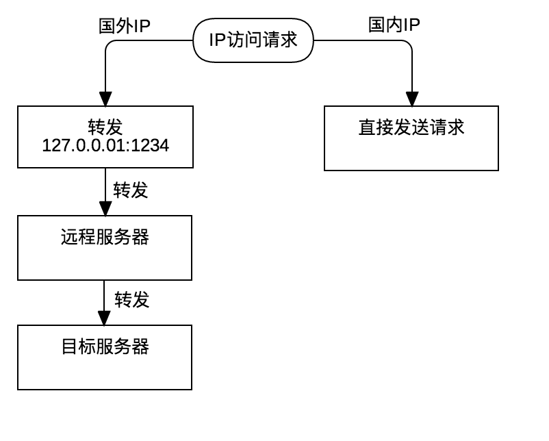

TL;DR 本文将介绍自动路由切换技术，这是作为专业的程序狗必备的生产性技能。
路由器刷LEDE
不再详述，见 Netgear WNDR4300固件刷openwrt/LEDE
自动路由技术原理解析
浏览器访问一个网站通过两个阶段完成：
- 解析网站的域名到IP
- HTTP请求这个IP
下面我们将按照这个顺序依次解决。
DNS解析技术
因为DNS可能存在错乱（没错，错乱～，你懂的），所以第一步是要解决DNS能够正确的解析这个问题。方案是：分而治之。国内的DNS让国内的DNS服务器解析。国外的部分需要特别处理，通过端口转发，将DNS交给远方的DNS服务器解析。我们将使用dnsmasq来完成这个功能
基于 dnsmasq 的方案
dnsmasq 简介
Dnsmasq是一个开源的轻量级DNS转发和DHCP、TFTP服务器，使用C语言编写。Dnsmasq针对家庭局域网等小型局域网设计，资源占用低，易于配置。
来源：维基百科
使用了openwrt/LDEDE之后将由路由器通过dnsmasq负责提供DHCP服务和DNS服务（通过将DNS服务器IP指向路由器所在的IP来实现）。
技术方案
如下图所示，dnsmasq 负责通过查表的方式判断域名是否是国内的域名：
- 对于国内的域名直接转发给国内的DNS服务器
- 对于国外的域名则转发给本地的
5300接口，而5300处有一个进程负责将进来的请求转发给远程的服务器，远程服务器再代理这个请求转发给远程的DNS服务器。
基于 ChinaDNS 的方案
ChinaDNS 简介
TODO
技术方案
TODO
基于无污染DNS服务器的方案
如果你能找到一个稳定的抗污染的权威的DNS服务器，那么你可以直接使用这个DNS作为你的默认的DNS服务器。这样的DNS服务器是存在的，需要少年你自己去搜索，这里不透露任何消息。
IP路由技术
因为IP路由可能存在错乱（没错，错乱～，again），所以对于部分IP是需要特别的路由技术才能顺利访问的。同样的，我们采用分而治之的原则。这里我们使用 iptables 来实现
基于 iptables 的方案
iptables 简介
iptables 是一个配置 Linux 内核 防火墙 的命令行工具，是 netfilter 项目的一部分。术语 iptables 也经常代指该内核级防火墙。
技术方案
iptables 将根据配置转发相关的网络请求，实现将国内和国外IP分离的目标。由于 iptables 实在很复杂，配置起来很麻烦，所以我们将通过另一个程序自动帮我们配置。但我们依旧要介绍一个相关的原理。
如下图所示，iptables 通过查询规则的方式判断IP是否是国外的IP：
- 国内的IP直接转发
- 国外的IP则转发到本地的 1234 端口，由一个 下文中的进程 转发到远程服务器，再由远程服务器代为发起请求。

基于 luci-app-shadowsocks 的方案
因为 iptables 实在比较难配置，而且难以理解，所以如果有程序帮助我们自动配置，那就开心多了，幸运的是 luci-app-shadowsocks 可以帮我们做到。具体的使用方法见下文。
动手实践
安装软件
下面假设你是熟悉 Linux 基本操作的，不做过多的解释。
首先我们先更新一下 package 信息1
opkg update
安装 dnsmasq
1 | opkg install dnsmasq |
配置 dnsmasq
新建配置目录
1 | mkdir /etc/dnsmasq.d |
下载 IP 地址文件
为了方便起见，我们在路由器上使用 wget 将配置文件下载到路由器。（你也可以在电脑上下载文件，然后上传上来，这样可以避免安装 wget, 节约空间）
首先安装
wget:1
opkg install wget
下载文件
1
2
3cd /etc/dnsmasq.d
wget -4 --no-check-certificate -O /etc/dnsmasq.d/accelerated-domains.china.conf https://github.com/felixonmars/dnsmasq-china-list/raw/master/accelerated-domains.china.conf
wget -4 --no-check-certificate -O /etc/dnsmasq.d/bogus-nxdomain.china.conf https://github.com/felixonmars/dnsmasq-china-list/raw/master/bogus-nxdomain.china.conf
设置非国内域名的 DNS server
1 | cd /etc/dnsmasq.d |
配置格式说明
accelerated-domains.china.conf 和 bogus-nxdomain.china.conf 内的格式类似于：1
server=/baidu.com/114.114.114.114
意思就是 baidu.com 及其子域名的 DNS 将走 114.114.114.114
在 gfwlist.conf 我们设置了1
server=/#/127.0.0.1#5300
因为 # 代表所有的域名，而 dnsmasq 的规则是按照准确匹配优先的原则，所以这条规则是其他规则匹配不到的情况下才起作用，也就是匹配国内域名失败的情况下才起作用。而本规则的含义是将 DNS 请求转发到 127.0.0.1 的 5300 端口. 下文 我们将启动一个进程来监听这个端口。
安装 iptables
1 | opkg install iptables |
安装 shadowsocks-libev 及其依赖
LEDE自带了 shadowsocks-libev,但是版本太低，会和下面的 luci-app-shadowsocks 发生冲突，因此需要下载最新的版本。
下载软件包
前去 官方仓库 下载最新的版本。我们选择下载已经编译好的二进制包，注意选择正确的CPU架构：mips_24kc。
关于如何查看正确的CPU架构信息，你可以在使用1
opkg update
的时候观察请求的URL：1
Downloading http://downloads.lede-project.org/releases/17.01.4/packages/mips_24kc/base/Packages.gz
可以看出 Netear WNDR4300 的 CPU架构是 mips_24kc。
相关的依赖的包，也要一并下载回来：
- libcares
- libev
- libmbedtls
- libsodium
安装依赖
1 | opkg install <libcares_*_mips_24kc.ipk> |
安装 shadowsocks-libev
1 | opkg install <shadowsocks-libev_*_mips_24kc.ipk> |
安装 luci-app-shadowsocks 及其依赖
下载软件包
前往官方 GitHub 仓库下载软件包，最要不要下载*-without-ipset-*的包，可能会导致缺少依赖。
安装依赖
透明代理功能需要 iptables-mod-tproxy1
opkg install iptables-mod-tproxy
安装 luci-app-shadowsocks
1 | opkg install <luci-app-shadowsocks_*_all.ipk> |
配置 shadowsocks
新增 shadowsocks 服务器
在 openwrt/LEDE 管理界面的菜单 services -> Shadowsocks 页面的 Servers Manage tab 中,新建你自己的 shadowsocks 服务器, 如下图:
增加白名单
我们增加一个白名单,里面记录了中国地区的IP,这样 shadowscoks 就能绕过这些IP,不使用代理了。
下载白名单
我们将从网上下载一个中国地区的IP列表:1
wget -O- 'http://ftp.apnic.net/apnic/stats/apnic/delegated-apnic-latest' | awk -F\| '/CN\|ipv4/ { printf("%s/%d\n", $4, 32-log($5)/log(2)) }' > /etc/chinadns_chnroute.txt
这个命令主要是去 APNIC 拿所有的 IP 列表，并过滤出来中国大陆的 IP-CIDR 列表，生成一个文件在 /etc/chinadns_chnroute.txt
应用白名单
在 openwrt/LEDE 管理界面的菜单 services -> Shadowsocks 页面的 Access Control tab 中, 应用你的配置，如下图：
开启 UDP relay
我们将开启 UDP relay 将 53 号端口的 DNS 查询请求，经由远程服务器转发至远程DNS服务器，配置如下图：
这里监听的本地端口是 5300 与 上文中的设定 相一致，使用的远程DNS服务器是 8.8.4.4
开启透明代理
透明代理启动后将会自动的帮我们配置好 iptables ，这也就是为什么我们不需要亲自配置 iptables 的原因。
透明代理的设置需要选择一个配置过的服务器,我们直接选择刚刚配置好的就行了。如下图：
进阶
DNS 通过 TCP 发送请求
因为 DNS 走的是 UDP 协议，很容易被伪造，而且 UDP 本身服务也不可靠。所以让 DNS 解析走 TCP 是一个好方案。DNS 走 TCP 的前提是 DNS 服务器支持 TCP 的方式查询，事实上由于这个是 RFC7766 设定的标准。目前绝大多数 DNS 服务器是支持 TCP 查询。
DNS-forwarder 方案
TODO
DNS2socket 方案
TODO
TCP 加速
kcptun
TODO
Linux BBR
TODO
一键脚本
作为一个程序员，一切以能够自动化作为自豪，同时也是为了以后折腾挂了，再恢复起来比较方便，这里提供了一键安装的脚本。
TODO
NOTE
很多标记为 TODO 的事项，因为本人太忙，可能就不写了，但是我都给出了关键信息，通过自行搜索应该能够找到足够的资料独立完成。